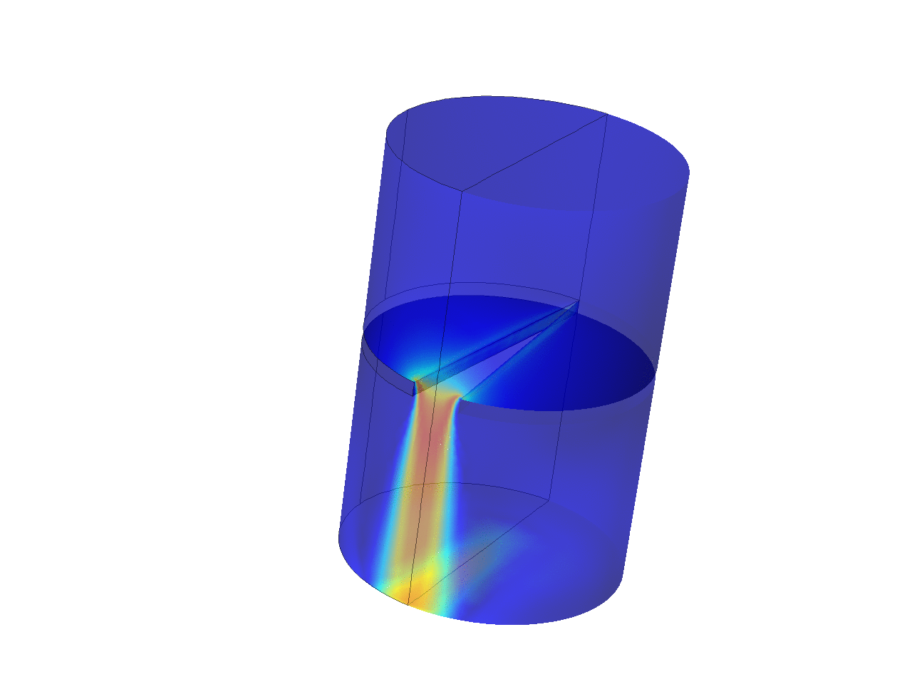
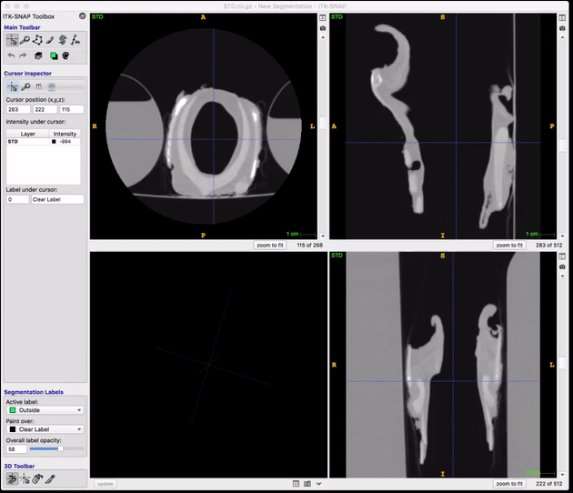

Modeling the larynx
for simulation of airflow during exercise
VCF
Alexander Lundervold, Bergen University College

drugs.com

3B Scientific
Breathing problems triggered by exercise
Based on changes in the geometry
Often misdiagnosed as asthma
Idea: simulate the airflow

Computational fluid dynamics
Conservation of mass, momentum and energy:
$$\begin{align} \frac{\partial\rho}{\partial t} + \nabla \cdot (\rho \mathbf{u}) &= 0\\ \rho \frac{\partial \mathbf{u}}{\partial t} + \rho (\mathbf{u} \cdot \nabla)\mathbf{u} &= \nabla \cdot [-p \mathbf{I} + \mathbf{\tau}] + \mathbf{F}\\ \rho C_p \left(\frac{\partial T}{\partial t} + (\mathbf{u} \cdot \nabla) T \right) &= - (\nabla \cdot \mathbf{q}) + \mathbf{\tau} : \mathbf{S} - \frac{T}{\rho} \frac{\partial \rho}{\partial T}\bigg|_p \left(\frac{\partial p}{\partial t} + (\mathbf{u} \cdot \nabla) p\right) + \mathbf{Q} \end{align}$$Navier-Stokes equations
To model one must simplify
For example, assume incompressible flow, so $\rho \sim$ constant:
Obtain
$$\begin{align*} \rho \nabla \cdot \mathbf{u} &= 0\\ \rho \frac{\partial \mathbf{u}}{\partial t} + \rho (\mathbf{u} \cdot \nabla)\mathbf{u} &= \nabla \cdot \big[- p \mathbf{I} + \mu (\nabla \mathbf{u} + (\nabla \mathbf{u})^T)] + \mathbf{F}\big] \end{align*}$$A problem:
Turbulence!Reynold's number in larynx: $~ 5000 > 2000$. Some researchers: laminar flow
To simplify, use turbulence model.
Best for larynx: $k-\omega$
Mustn't forget: Fluid-structure interaction: deformable and moving structures interacting with internal fluid flow
- Based on the finite-element method
- Several turbulence models included.
- Supports custom PDEs etc
- Need boundary conditions: f.ex. velocity in, pressure out, wall-functions or no-slip
We treat COMSOL almost like as a "black box" for now
[Click on image]Simplify the geometry
Air flow through simple object with two obstructions
Aim to reproduce results from e.g. Ugis Lacis, Modelling air flow in the larynx, MSc. thesis, Umeå, 2012
Much can be done in simplified settings
Vocal cord dysfunction
Realistic simulation in patient-specific geometries
Too simple
Idea: use CT images of a real larynx

Lots of data on horses
From NMBU earlier this week:
Segmentation and 3D reconstruction, trying to preserve all the biomechanically important features.
After smoothing and other necessary changes:

Aim to reproduce results from e.g. Bakhshaee, Computational models of human and animal larynx and vocal folds, PhD thesis, McGill University, 2013
Work in progress
{kind=link}
Outlook
- Predict the effect of abnormal anatomy or function
- Predict the effect of surgery and medication
- Expand to other organ systems